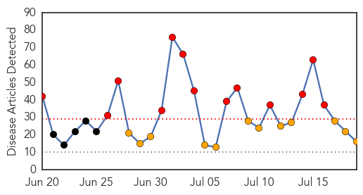
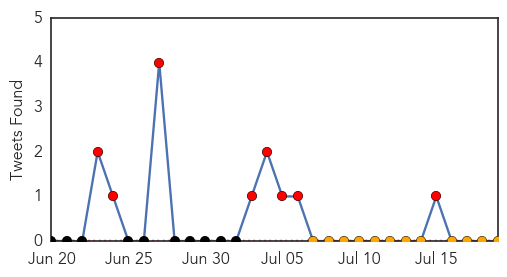
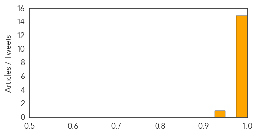
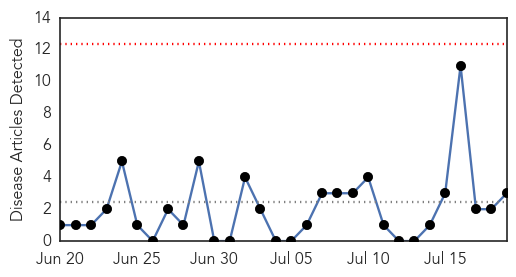
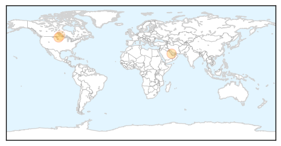
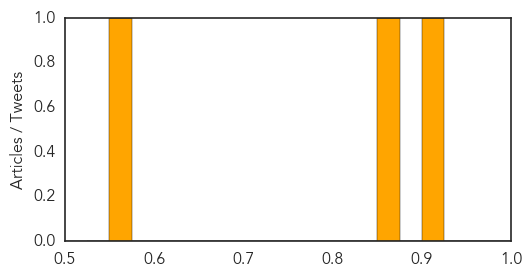

Ebola
30-Day Web Trend
13 alerts, 12 warnings

30-Day Twitter Trend
1 alerts, 1 warnings

Article Locations

Article Confidences
Top Articles:
- 0.999
- UPDATE 1-Ebola deaths surge in Sierra Leone and Liberia - WHO
- 0.980
- Wife of Raven posts screed about Michael Sam, infidelity, Hitler
- 0.980
- Feather's 'idiosyncratic machines' garner Sondheim prize
- 0.980
- Mammut On World Cafe
- 0.980
- Police search for missing woman
- 0.980
- Police probe West Baltimore shooting
- 0.980
- The Search Is On For A Critical Missing Person In Baltimore County
- 0.980
- Venice Cafe gets some help from friends after break-in
- 0.980
- Visits to Md. national parks down slightly
- 0.980
- Md. national park attendance down
- 0.980
- Md. health officials monitoring for mosquito-borne chikungunya virus
- 0.980
- AAA shifting retail focus in Maryland to include auto repair shops
- 0.980
- Md. adds 7,700 jobs in June; jobless rate rises
- 0.980
- Maryland Zoo's new penguin exhibit to open Sept. 27
- 0.980
- Baltimore native allegedly beaten by Israeli police returns to U.S.
- 0.930
- An 'Overhappy' Survivor, A Guarded Forecast: Reporting On Ebola
Top Tweets:
-
No tweets found for Jul 19, 2014
Hepatitis
30-Day Web Trend
0 alerts, 0 warnings

30-Day Twitter Trend
0 alerts, 0 warnings

Article Locations
Article Confidences
Top Articles:
Top Tweets:
-
No tweets found for Jul 19, 2014